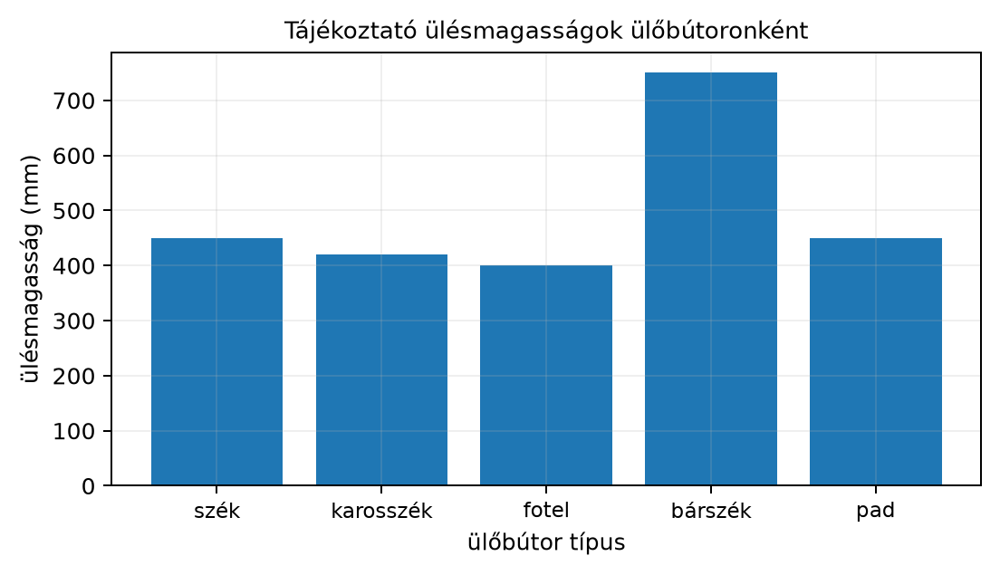

A vevő új étkezőszékeket rendel a konyhájába. Elmondja, hogy a régi széken fél óra után fájt a dereka, és a lába is elgémberedett. Az asztalos nemcsak szép fát választ, hanem megméri a vevő testmagasságát, a pult magasságát, és úgy tervezi meg a szék ülésmagasságát, ülésmélységét, támladőlését. A szék ezért nem csupán „négy láb egy ülőlappal”, hanem ergonómiailag méretezett, jól merevített állványszerkezet.
Képzelj el egy tömörfából készült támlás széket a műhelyben. Elölnézetből két mellső láb, két káva és az ülőlap látszik; oldalnézetből a hátsó láb a támlával együtt hátrafelé dől. Az asztalos a derékszögelőt és a hajlásszögmérőt használja. A rajzon a méretek mm-ben szerepelnek, mm kiírása nélkül. A szerkezetet úgy rajzoljuk meg, hogy a csomópontok is látszódjanak.
Definíció. Az ülőbútor olyan bútor, amely az ember ülő testhelyzetben való megtartására szolgál. Fő részei az ülőlap vagy ülőfelület, a teherhordó állványszerkezet és a támla vagy annak hiánya.
Az ülőbútorok jellemző típusai:
Megjegyzés. A zsámoly (támla nélküli alacsony ülőke) és a hokedli szintén ülőbútor, de állványszerkezetük egyszerűbb: nincs támla, gyakran nincs káva.

Definíció. Az ülőbútor állványszerkezete a teherhordó vázelemek együttese: a lábak, a kávák (keretlécek), a keresztmerevítők és a támla merevítő elemei. Az ülőlap általában erre szerelhető, vagy maga is része a merevítésnek.
Az állványszerkezet fő részei egy hagyományos támlás asztalos széken:
Szabály. A lábak soha ne álljanak egyetlen csomópontban, hajlékonyan. Az oldalsó kávák és a keresztmerevítők háromszögeléssel teszik merevvé az állványszerkezetet. Minél magasabb a terhelés és minél lágyabb a fa, annál nagyobb keresztmetszet vagy több merevítés szükséges.
Amikor valaki leül a székre, a következő erőhatások lépnek fel (egyszerűsítve):
Szabály. A kötéseket úgy tervezzük, hogy a várható igénybevételre ne a ragasztóréteg egyedül, hanem a fa rostjai és a mechanikai kötés is dolgozzon. Például a lábat és a kávát csappal, lamellóval vagy köldökcsappal kötjük; a ragasztó csak a felületet rögzíti.
Definíció. Az ergonómia az emberi test méreteinek és mozgásának figyelembevétele a termék tervezésénél. Az ülőbútor akkor kényelmes és egészséges, ha csökkenti a gerinc és a láb terhelését.
A leggyakoribb tájékoztató méretek felnőtt, asztalhoz ülő emberre:
| Méret | Tájékoztató érték (mm) | Megjegyzés |
|---|---|---|
| Ülésmagasság (az ülőlap felső síkja a padlótól) | 420–480 | Asztalhoz igazítva jellemzően 450–460 |
| Ülésmélység (az ülőlap mélysége) | 380–450 | A combot nem szabad nyomnia |
| Ülésszélesség | 380–450 | Egy személy |
| Ülésdőlés (az ülőlap hátrafelé lejtése) | 3–5° | Megakadályozza az előrecsúszást |
| Támladőlés az üléshez képest | 100–110° | A derék támasztása |
| Támlamagasság (ülőlaptól a támla tetejéig) | 300–400 | Alacsony támla; magas támla a lapockáig |
| Karfa magassága (ülőlaptól) | 200–260 | Karosszéknél |
| Lábtartó magassága bárszéknél | ülésmagasság − 400–470 | Lábfej és alsó lábszár megtámasztása; 750 mm-es bárszéknél kb. 280–350 mm |
Figyelem. Ezek a számok tájékoztató jellegűek, nem szabvány előírások. A pontos méreteket a felhasználó testméreteihez, az asztal vagy pult magasságához és a rendeltetéshez igazítjuk. (ellenőrizendő: aktuális ergonómiai szabványok, gyártói ajánlások; a lábtartó magassága a felhasználó térdhajlat-magasságából adódik, felnőttnél tájékoztatóan 400–480 mm)
Szabály. Az ülésmagasság akkor megfelelő, ha a comb vízszintes vagy enyhén lejt, a talp teljes talppal a padlón van, és a térd nincs túl erősen behajlítva. Ha az ülés túl magas, a comb nyomódik; ha túl alacsony, a térd fárad.
Példa. Egy 165 cm magas és egy 185 cm magas személy nem feltétlenül érzi jól magát ugyanazon a 450 mm ülésmagasságú széken. A kisebb testalkatú ember lába nem ér kényelmesen talajt, a magasabb ember térde túl erősen behajlik. Ezért a bútor készítése előtt mindig kérdezzük meg a vevőt, vagy használjunk állítható magasságú széket.
Most készítsünk el egy hagyományos, tömörfából készült étkezőszék szerkezeti rajzát. A rajz európai (E) vetítési rendben készül. A méretek mm-ben értendők, a mm-t a rajzon nem írjuk ki.
A szék fő méretei (tájékoztató):
Elölnézet (E vetület: a néző szemből látja a széket):
Oldalnézet (E vetület: a néző a szék bal oldaláról nézi, a nézet az elölnézettől jobbra kerül; az elölnézethez közelebbi oldal a szék hátoldala, ezért a hátradőlő támla a rajz bal oldalán, a mellső láb jobb oldalán látszik):
Felülnézet (a szék tetején):
Csomópontok (a legfontosabb szerkezeti metszetek):
Elülső láb – elülső káva kapcsolata: nyitott csapos kötés (ollós csap). A láb fészkébe a káva csapja illeszkedik, a csap hossza 20 mm. Az ülőlap a káva felső élén fekszik fel, és csavaros ülőlaprögzítővel kapcsolódik hozzá; az ülőlap széle és a lábak közé 2 mm hézagot hagyunk, hogy a fa nedvességtágulása ne feszítse szét.
Hátsó láb – oldalsó káva kapcsolata: vésett csap, ferde aljjal. A csapirány párhuzamos a káva irányával, az aljazás olyan szögben áll, hogy az oldalsó káva vízszintes maradjon. A hátsó láb ferdesége miatt a csap nem derékszögű, hanem ahhoz igazodik.
Támlarudak és a felső ív: a rudak végeit csúcsba faragjuk vagy lapos csappal beeresztjük a felső ívbe, illetve a hátsó kávába. Lépés: a rúd felső végét tompaszögűre vágjuk, hogy ráfeküdjön a felső ív belső ívére.
Az ábra a fenti rajzleírás képi megfelelője: az oldalnézet az elölnézettől jobbra, a felülnézet alatta áll, a csomópontok jobbra lent, 2:1-ben. Az interaktív változatban a csomópontok nagyítva is megnézhetők, és a méretek ki-be kapcsolhatók.
A szék támlájának felső íve és a hátsó lábak homorú-hátsó görbülete íves alkatrész. Ezeket a görbéket a Síkmértani szerkesztések az asztalos gyakorlatában alfejezetben tanult módszerekkel szerkesztjük.
Felső támlaléc szegmensíve:
ahol a húr hosszának fele, azaz . (Ugyanez a teljes húrhosszal: . Figyelem: a -es alakba nem a fél húrt, hanem a teljes húrt kell behelyettesíteni, különben a sugár négyszer kisebb lesz.)
Behelyettesítve:
Visszaellenőrzés: .
Szabály. Az ívet körzővel vagy léc-körzővel húzzuk meg. Az érintőleges átmenethez az ív közepén a sugár merőleges az alsó él vízszintesére. Az ív felső széle párhuzamos az alsóval, ezért kifelé eltoljuk a sugarat a léc vastagságával, például 25 mm-rel.
Az ábrán a derékszögű háromszögből közvetlenül adódik az összefüggés: , ebből . Az interaktív kalkulátorban a húr és a magasság csúszkával állítható, a sugár és a visszaellenőrzés élőben frissül.
Hátsó láb homorú hátgörbéje:
Gyakorlati tanács. A szerkesztett görbéből készítsünk sablont 3–4 mm vastag farostlemezből vagy keménypapírból. Ellenőrizzük a szimmetriát: a fél ív alakját hajtsuk tükörbe, és rajzoljuk le a másik oldalt. A sablont ezután a munkadarabra helyezzük, és finom ceruzával átrajzoljuk. A görbéket szalagfűrésszel vagy marógéppel, sablon szerint munkáljuk ki.
A szabásjegyzék a rajzból olvasott alkatrészlista. A méreteket hossz × szélesség × vastagság sorrendben adjuk meg, mm-ben. A nyers méretbe a ráhagyásokat is felszámítjuk.
Példaként a fenti támlás szék szabásjegyzéke (tömör tölgy, mintaanyag):
| Tétel | Megnevezés | Db | Anyag | Kész méret h × sz × v (mm) | Nyers méret h × sz × v (mm) | Megjegyzés |
|---|---|---|---|---|---|---|
| 1 | Mellső láb | 2 | tölgy | 430 × 42 × 42 | 440 × 45 × 45 | csapozásra +10 mm |
| 2 | Hátsó láb (támlaoszloppal) | 2 | tölgy | 850 × 45 × 45 | 870 × 50 × 50 | ferdén hajlított, ráhagyással |
| 3 | Elülső káva | 1 | tölgy | 380 × 80 × 20 | 400 × 90 × 22 | ollós csap |
| 4 | Oldalsó káva | 2 | tölgy | 360 × 80 × 20 | 380 × 90 × 22 | vésett csap, ferdén aljazott |
| 5 | Hátsó káva | 1 | tölgy | 380 × 80 × 20 | 400 × 90 × 22 | az ülés alatt, támlarudak alatt |
| 6 | Ülőlap | 1 | tölgy (vagy rétegelt lemez) | 420 × 400 × 20 | 440 × 420 × 22 | élzárás, váll |
| 7 | Felső támlaléc (ív) | 1 | tölgy | kb. 464 (ívhossz kb. 424 + 2 × 20 csap) × 80 × 25 | 470 × 90 × 55 | szegmensívből fűrészelve, R ≈ 895 mm (vagy rétegelt hajlítással, akkor nyers vastagság 25 + ráhagyás) |
| 8 | Támlarúd | 3 | tölgy | 300 × 36 × 18 | 320 × 40 × 20 | felső csúccsal |
Szabály. Íves, tömörből fűrészelt alkatrésznél a nyers vastagság = ívmagasság + kész vastagság + ráhagyás (itt 25 + 25 + 5 = 55 mm), a hossz pedig az ívhossz és a csapok hossza.
Szabály. A szabásjegyzékbe minden alkatrészt felveszünk. A nyers méret a kész méretnél nagyobb, mert a ráhagyás fűrészelésre, gyalulásra, csapozásra szolgál. A ráhagyás mértéke jellemzően 5–10 mm a hosszban és a szélességben, 2–4 mm a vastagságban, de függ az anyag fűrészelési és gyalulási minőségétől.
Továbbvitt eredmény. Ezt a székszerkezetet, az erőjátékot és a szabásjegyzéket fogjuk felhasználni a(z) Ülőbútorok gyártása: íves alkatrészek, sablonok, csapozás alfejezetben a gyártási technológia kidolgozásához, valamint a(z) Fekvőbútorok és a kárpitozás alapjai alfejezetben a kárpitozott ülőfelület és a szerkezet kapcsolatának megértéséhez.
A rajz elkészítése után ellenőrizzük:
| Mit ellenőrzünk? | Mivel? | Tűrés / elfogadási érték |
|---|---|---|
| A nézeti elhelyezkedés | E vetítési rend ismerete | bal oldalnézet az elölnézettől jobbra, felülnézet az elölnézet alatt |
| A fő méretek összhangja | tolómérő, vonalzó a rajzon | ±1 mm a rajzon, méretlánc ellenőrzése |
| Szög és dőlés | hajlásszögmérő, szögmérő | támladőlés 100–110°, ülésdőlés 3–5° |
| Szabásjegyzék teljessége | darabjegyzék összevetése | minden alkatrész szerepel, db helyes |
| A csomópontok szerkezeti helyessége | csapozás, aljazás rajza | a nyitott csap és a vésett csap mélysége, ferdén aljazott csap szöge |
Hiba esetén. Ha a méretlánc nem záródik, jelöljük meg a hiányzó méretet. Ha a csomópontban a csap hossza nem illeszkedik, javítsuk a rajzot a gyártás előtt.
Az ülés túl magas vagy túl alacsony. Ok: nem mértük le a vevő alsó lábszárát és az asztal magasságát. Helyes gyakorlat: személyre szabott méret; ha nincs mérés, 450 mm-es tájékoztató átlagérték.
A hátsó láb és a támlaoszlop derékban meghajlik. Ok: túl vékony keresztmetszet, gyenge kötés, nincs elegendő merevítés. Helyes gyakorlat: a hátsó láb vastagabb (min. 45×45 mm), a támlaoszlop és az ülés közötti sarok merev, a kávák szélesek.
A szék „nyikorog”, idomulás után lötyög. Ok: rosszul illesztett csapok, túl kevés ragasztó, a ragasztás előtt nem érlelt nedvességtartalom. Helyes gyakorlat: pontos csapfészek, D3/D4 ragasztó, a fa nedvességtartalma 8–12% (beltéri).
A rajzon a támla görbülete nem szimmetrikus. Ok: a görbét kézzel, sablon nélkül rajzolták. Helyes gyakorlat: sablon, tükörbe hajtás, ellenőrzés körzővel.
Egy asztalos pár ülőpadot készített egy étterembe. A rendelés szerint az ülőpadok 480 mm magasak voltak. A vevő később reklamált: a vendégek kényelmetlennek érezték, mert a lábuk nem ért kényelmesen a padlóhoz. A hibát az okozta, hogy az étterem padlója enyhén lejtett, és a pult alatt lábdeszkát helyeztek el, ami miatt a térd magasabbra került. Az asztalos utánamért: az ülésmagasságot 435 mm-re csökkentette, és a pad elé lábtartót is szerelt. Tanulság: a helyszíni felméréskor nemcsak a padló magasságát, hanem a tényleges ülőhelyzetet is ellenőrizni kell.
Válaszolj röviden, indoklással vagy számolással.
1. feladat (A)
Sorolja fel az ülőbútorok négy típusát, és mindegyikhez írjon egy-egy
jellemzőt.
2. feladat (A)
Milyen elemekből áll a támlás szék állványszerkezete? Nevezze meg a
lábakat összekötő fő részeket.
3. feladat (B)
Egy szék felső támlaléc szegmensívének húrhossza 320 mm, a húr feletti
megemelkedés 22 mm. Számítsa ki az ív sugarát az
összefüggéssel, ahol
a fél húrhossz,
a magasság. (A méreteket mm-ben adja meg.)
4. feladat (B)
Adott a támlás szék szabásjegyzékéből hiányzó sor:
Mellső láb: Db = 2, kész méret 430 × 42 × 42 mm, a nyers méret hossza 10
mm-rel, szélessége 3 mm-rel, vastagsága 3 mm-rel nagyobb. Adja meg a
nyers méretet mm-ben, h × sz × v sorrendben.
Mennyi a teljes anyagszükséglet a két lábra, ha
tölgy fűrészáru mintaára 320 000 Ft? (Számoljon
anyagból, a térfogatot
-ben
3 tizedes pontossággal.)
5. feladat (C)
Magyarázza el, miért növeli a keresztmerevítő a szék merevségét. Rajzban
írja le, hová kerül a keresztmerevítő egy négylábú széken (szövegesen:
mely lábak közé, milyen irányban). Mi történne a székkel, ha nem lenne
keresztmerevítő?
6. feladat (D)
Tervezzen meg egy egyszerű, támla nélküli konyhai hokedlit. Adjon meg:
ülésmagasság 450 mm, ülőlap 350 × 350 mm, láb 40 × 40 mm. Készítse el a
szabásjegyzéket 4 lábra, 4 kávára (méreteket Ön választja, de reálisan),
és számolja ki a tömörfa anyagszükségletet (térfogat)
-ben,
ha az anyagfa nyers méreteit használja. A részletes megoldáshoz
használja a fenti mintatáblázatot.
Önellenőrzés – válaszok:
Igaz. A hátsó láb gyakran felfelé meghosszabbodik, és támlaoszlopként szolgál, így a támla alsó része a lábból alakul ki.
,
.
Az ülés enyhe hátradöntése (3–5°) megakadályozza, hogy a test előrecsússzon az ülőlapon, és a comb mentén csökkenti a nyomást, így a hát természetesebben támaszkodik a támlához.
Oldalsó kávák és keresztmerevítők (vagy az elülső és hátsó kávák) növelik a váz (állványszerkezet) merevségét, mert megakadályozzák a lábak szétnyílását és a keret elcsavarodását.
A 480 mm magas ülés egy 150 cm magas embernél túl magas. A lába nem ér kényelmesen a padlóhoz, a combját nyomja az ülés első éle, és a keringése is romolhat. Ezért az ülésmagasságot a felhasználó testmagasságához kell igazítani.
A görbe megrajzolásához használjunk kört, léc-körzőt vagy sablont. A szimmetrikus görbéhez a sablont hajtsuk tükörbe, és ellenőrizzük, hogy a két fél megegyezik.
Feladatok megoldásai:
1. feladat
Például szék (négy lábon áll, támla van), karosszék (könyöklő és magas
támla), fotel (mély ülőfelület, párnázott), pad (hosszabb, több
személyes). Bár az elfogadható, ha valaki a bárszéket is beírja.
2. feladat
Állványszerkezet elemei: lábak, elülső káva, oldalsó kávák, hátsó káva,
keresztmerevítők, támla (támlaoszlop, felső támlaléc, támlarudak). A
lábakat kávák kötik össze; az oldalsó és keresztmerevítők a ferde
támaszok.
3. feladat
Adott: húrhossz
,
magasság
.
Fél húrhossz:
.
Ellenőrzés:
,
vagyis visszaadja a megadott magasságot.
4. feladat
Kész méret: 430 × 42 × 42 mm.
Ráhagyás: hossz +10, szél +3, vastagság +3.
Nyers méret: 440 × 45 × 45 mm.
Egy láb nyers térfogata:
Két lábra:
(3 tizedes pontossággal).
Anyagköltség:
.
Tehát a két mellső láb nyersanyagköltsége kb. 570 Ft (mintaár).
5. feladat
A keresztmerevítő átlós vagy keresztezett lécek összessége, amely a
lábak közötti téglalapot háromszögekké alakítja. A háromszög
geometriailag merev, ezért a szék nem tud elcsavarodni vagy
összecsuklani. Négylábú széken jellemzően az oldalsó kávák alatt, a
mellső és a hátsó lábak között átlósan helyezzük el. Keresztmerevítő
nélkül a szék oldalirányú terhelésre könnyen elcsavarodik, a lábak
szétnyílnak, a csapok meglazulnak, és a bútor nyikorog, tönkremegy.
6. feladat
Példa megoldás.
Ülésmagasság 450 mm, az ülőlap vastagsága 20 mm, ezért a láb kész hossza
450 − 20 = 430 mm. Lábak (4 db): kész 430 × 40 × 40 mm, nyers 440 × 44 ×
44 mm (ráhagyással).
Kávák (4 db): a lábak külső éle az ülőlap szélével egy síkban van, ezért
a lábak belső távolsága 350 − 2 · 40 = 270 mm. Mindkét végén 15 mm csap
jut, így a káva kész hossza 270 + 2 · 15 = 300 mm. Káva kész méret: 300
× 60 × 20 mm, nyers méret: 310 × 65 × 22 mm.
Lábak nyers térfogata:
.
Kávák nyers térfogata:
.
Összesen:
(3 tizedes).
(Az ülőlapot itt nem számoltuk, mert a feladat csak a vázelemekre
kérdezett; ha az ülőlapot is hozzáadjuk, annak nyers mérete 360 × 360 ×
22 mm, térfogata
,
a végösszeg
körül alakul.)
Az ülőbútor az ember ülő testhelyzetének megtartására szolgál. Fő típusai: szék, karosszék, fotel, pad, bárszék; a kettő közötti határok fokozatosak. A szék állványszerkezete lábakból, elülső és oldalsó kávákból, hátsó kávából, keresztmerevítőkből és támlából áll. A merevség a háromszögelés és a jó csapkötések révén jön létre. Ergonómiai szempontból a legfontosabb méretek: ülésmagasság 420–480 mm (tájékoztató), ülésmélység 380–450 mm, ülésdőlés 3–5°, támladőlés 100–110° az üléshez képest. A támlás szék szerkezeti rajzát E vetítési rendben, elölnézet, oldalnézet, felülnézet és csomópontok megadásával kell elkészíteni. Az íves alkatrészeket szegmensívből vagy kosárívből szerkesztjük, sablonnal. A szabásjegyzék minden alkatrészt tartalmaz, a kész méret és a nyers méret feltüntetésével. A továbbvitt eredmény: a székszerkezet és a szabásjegyzék alapozza meg a székgyártást (Ülőbútorok gyártása: íves alkatrészek, sablonok, csapozás) és a kárpitozott ülőbútorok szerkezetét (Fekvőbútorok és a kárpitozás alapjai).